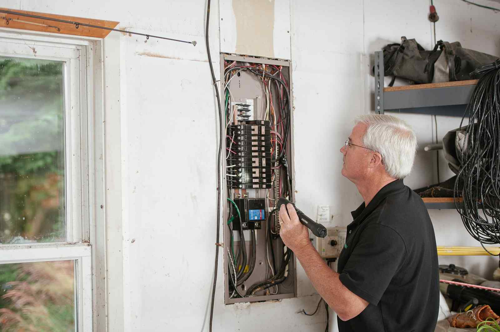

Before a home inspection, clear a path to the attic hatch, the electrical panel, the water heater, the HVAC equipment, the space under every sink and the outside walls of the house. Texas inspectors are not required to move your furniture or boxes to reach something, so anything blocked can end up on the report as not inspected.
That last part is the reason this is worth a weekend. A buyer reads a report full of items the inspector could not get to and starts wondering what is behind the boxes. Clearing access ahead of time lets the inspector see the systems themselves, so the report describes the house and not the storage in front of it.
What the inspector is actually allowed to skip
Home inspections in Texas follow the Texas Real Estate Commission's standards of practice. The general provisions in 22 Texas Administrative Code 535.227 define "accessible" as something the inspector can approach, enter or view without climbing over obstacles or moving furnishings or large, heavy or fragile objects. The same rule says an inspection is a limited visual survey, and it lists things the inspector is not required to inspect, including anything hidden or concealed.
In plain terms: if the electrical panel is behind a stack of storage bins, the inspector does not have to unstack them. If the attic hatch is in a closet full of hanging clothes and shoe boxes, the attic may not get looked at. The full set of TREC rules, including the inspection standards, is on the commission's rules and laws page.
In most Texas sales the buyer hires the inspector, but the house is still yours until closing, so clearing the way usually lands on the seller.
The six places to clear first
Walk the house with the inspection in mind instead of the listing photos. These are the spots that get blocked most often.
- The attic hatch. In a lot of North Texas houses the pull-down ladder is in the garage ceiling or a hallway closet. The inspector needs room to drop the ladder and stand at the bottom of it, which means the floor under the hatch has to be clear, not just the hatch itself. Our post on what has been up in the attic covers clearing the attic itself if that needs to happen too.
- The electrical panel. Usually on a garage wall, and usually behind something. Leave open floor in front of it.
- The water heater. In a garage corner or a utility closet. The inspector needs to see the tank, the venting and the connections. Our post on water heaters, softeners and the utility closet covers that closet in more detail.
- The HVAC equipment. The indoor unit in the attic or a closet, and the outdoor unit beside the house. Move anything leaning against the condenser.
- Under every sink. Kitchen, bathrooms and laundry. Cabinets packed with cleaning bottles hide the plumbing.
- The outside walls. Firewood, bins, old lumber and anything else stacked against the house hides the foundation edge and the siding.
The chemicals stay behind. Clearing under the sinks and the garage shelves usually turns up old paint, pool chemicals, pesticides and half-empty cleaners. Those are household hazardous waste, and they go to your city's chemical collection program, not onto our truck. The EPA's household hazardous waste page explains why they need separate handling, and Plano residents can use the city's household chemical collection program. Most cities in the area run something similar.
The garage is usually the whole problem
In most of the houses we see, the attic hatch, the panel and the water heater all live in the garage, which is also where everything that did not have a home ended up. One crowded garage can block three of the six spots at once.
You do not need the garage empty for inspection day. You need clear floor in front of the panel, under the hatch and around the water heater, and a walkable path between them. If the garage has been filling for years, though, the inspection is a good deadline to finally deal with it, because the buyer is going to see it at the final walkthrough anyway. Our garage cleanout checklist walks through sorting it into keep, donate, toss and hazardous piles.
Old appliances are a common blocker. In Wylie, it is often a dead garage freezer wedged behind years of storage sitting right where the inspector needs to stand. In the older houses near the square in McKinney, it can be a failed water heater in a tight original utility closet that has to come out before anyone can see the new one. And around Lewisville Lake, it is usually a garage in The Colony that has absorbed years of patio sets and storage by the time the house is listed.
Inside the house
Inside, the inspector checks windows, doors, outlets, ceilings and floors in every room. They will not move a heavy dresser to reach an outlet or a bookcase to open a window. You do not have to empty every room, but make sure each window can be reached and opened, each door swings fully, and the closet floors are clear enough to see.
If the house is already half packed, the boxes are the obstacle. Stack them in the middle of the room, away from the walls, windows and outlets. If some of what is in those boxes is not making the move, it is easier to let it go now than to carry it into the next house. Our post on what to clear before the listing photos covers the earlier stage of the same sale.
Timing it against the inspection date
Work backward from the inspection, not from closing. Buyers usually schedule the inspection inside the option period, which is set in the contract and is often short, so there may not be much warning.
A workable order:
- As soon as the house goes under contract, walk the six spots and note what blocks each one.
- Pull out the hazardous items first and set them aside for your city's drop-off.
- Pick what you are keeping and move it to the middle of rooms or into the car.
- Have everything else hauled before the inspector arrives, not after.
If you are the buyer and the seller has not cleared access, the report will usually say so. Talk to your agent about whether to ask for a second look once the area is clear.
How the pickup runs
Send us a photo of the garage, the closet or the side of the house that is in the way, and tell us your inspection date. A crew looks at what you have and gives you a firm number before anything is loaded. The quote is the bill, and disposal is included. We are affordable and priced fair, based on how much there is to take.
You point, we carry, we sweep. These are our own crews, not gig labor. Call before noon and same afternoon is typical across the northern suburbs, which matters when an inspection is two days out. When you know what has to go, tell us what needs to go, or see how our garage cleanouts work.
Frequently asked questions
Will a home inspector move my stuff to reach the panel or the attic?
They are not required to. The TREC standards define accessible as reachable without moving furnishings or large, heavy or fragile objects, so blocked areas may be reported as not inspected.
Does the garage need to be empty for the inspection?
No. It needs clear floor in front of the electrical panel, under the attic hatch and around the water heater, with a path between them.
Who is responsible for clearing access, the buyer or the seller?
The buyer usually hires the inspector, but the house belongs to the seller until closing, so clearing the way normally falls to the seller. Your agent can confirm what your contract says.
Can you take the paint and chemicals from the garage shelves?
No. Paint, pool chemicals, pesticides and cleaners go to your city's household chemical collection program. Keep them closed and set aside until drop-off.
How fast can you clear the garage before an inspection?
Call before noon and same afternoon is typical in the northern suburbs. It is not guaranteed, because access and job size are real variables, so call as soon as the date is set.
Clear the path, leave the chemicals for the city, and let the inspector see the house you are actually selling.